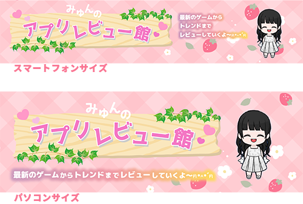

Work

ヘッダー画像
デザイン
ブログ投稿サイトのヘッダー画像
課題とコンセプト
現在のブログ投稿サイトのヘッダー画像が寂しげなので、集客に繋げられるようなヘッダーにしたいとのご要望があり作成しました。
工夫した点
ブログ全体の雰囲気がピンク色の可愛らしい感じであり、サイトの背景色も薄いピンク色であった為、ヘッダー画像の背景色もそれに馴染むような色を選びました。 可愛らしい雰囲気だけではなく、何のブログなのか訪れた人が見てもすぐにわかるように、タイトルは看板風にして目立たせました。 楽しげな感じを演出するために、文字を上下にずらしたり、明るい色のグラデーションで縁文字にしたりと工夫しました。